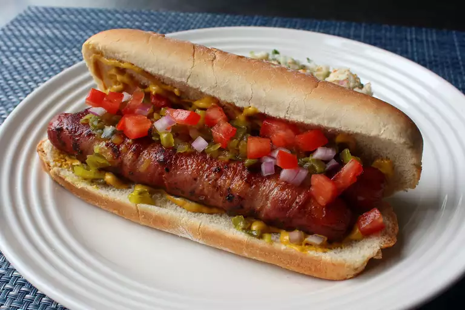

Bacon-Wrapped Double Dogs

We are building a better bacon dog by using 2 smaller hot dogs instead of 1 larger one, which we will merge together using the latest bacon-binding technology. Other than some potato chips, I think potato salad is the ultimate hot dog side dish, so go ahead and serve this up with some.
- 4 (2 ounce) hot dogs
- 4 slices cold center-cut, thinly sliced bacon
- 2 large hot dog buns
- 2 tablespoons prepared yellow mustard, or to taste
- 2 tablespoons dill pickle relish, or to taste
- 2 teaspoons diced red onion, or to taste
- 2 tablespoons diced tomato, or to taste
- Place 1 hot dog horizontally at the top edge of 1 bacon slice; roll once to secure. Place the second hot dog on the bacon, directly under the first hot dog, and wrap bacon twice at an angle. Tuck between the hot dogs. Tuck in second bacon slice where you left off and roll over remaining half of the hot dogs. Secure the end between the hot dogs. Repeat with remaining hot dogs and bacon slices.
- Heat a nonstick pan over medium heat and add bacon-wrapped hot dogs. Cook, turning as needed, until browned on all sides, about 10 minutes.
- Spread 1 tablespoon mustard over each bun. Add hot dogs. Top with dill pickle relish, red onion, and tomato.